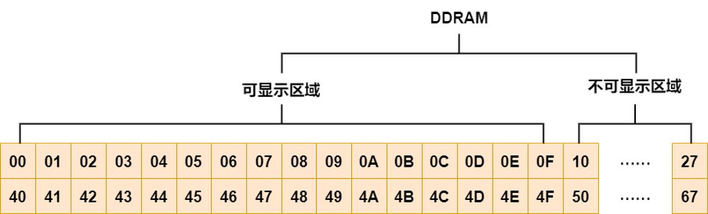
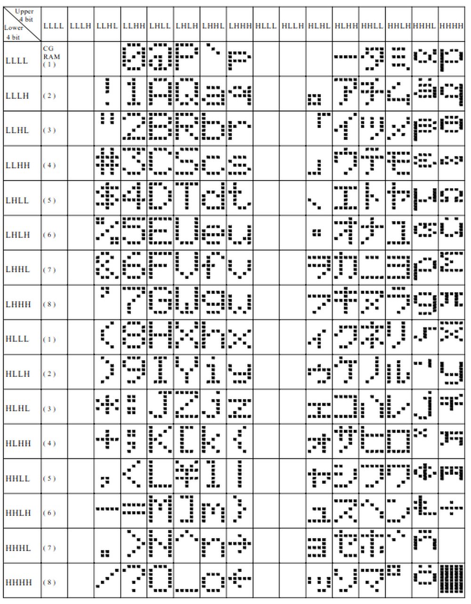
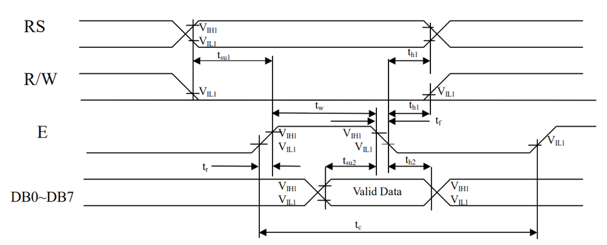
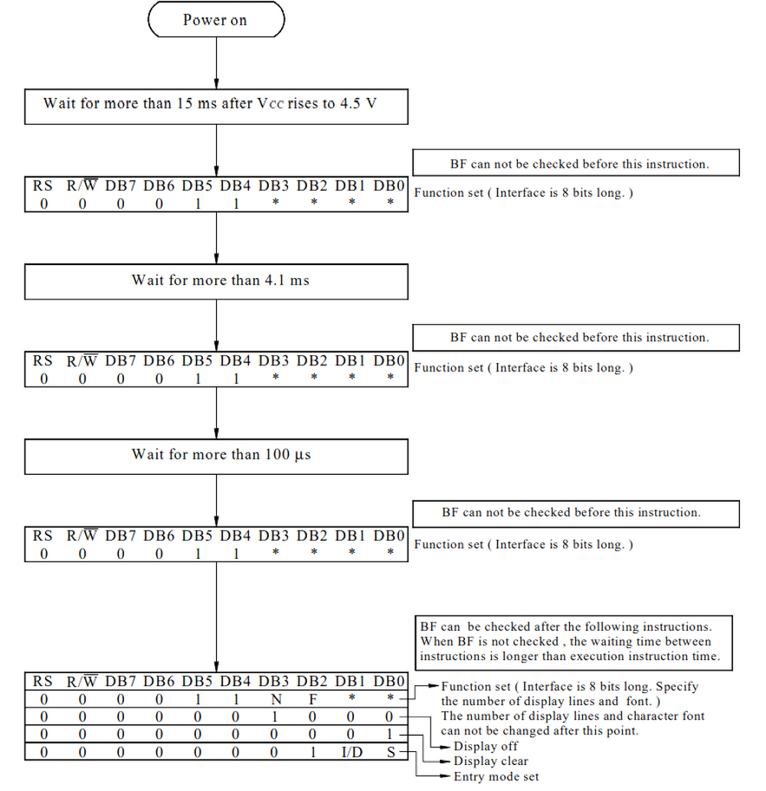

第二章——LCD1602 数据手册速览
1. LCD1602 基本参数
| 参数 | 参数值 |
|---|---|
| 供电电压 | 4.5V-5.5V |
| 通信方式 | 并行通信，支持 4 总线和 8 总线 |
| 字符分辨率 | 支持 5x8，或者 5x10 字符点阵 |
| 字符数 | 可显示字符 16x2，可存储字符 40x2 |
| 自定义字符 | 可自定义 8 个 5x8 字符，或者 4 个 5x10 字符 |
| 光标 | 支持光标以及光标闪烁 |
| 字符滚动 | 支持字符水平滚动 |
2. LCD 引脚介绍
下面是 LCD1602 的 16 个引脚分布：
| 引脚序号 | 引脚编号 | 介绍 |
|---|---|---|
| 1 | \(V_{SS}\) | 供电负极 |
| 2 | \(V_{DD}\) | 供电正极 |
| 3 | V0 | 对比度调节电压 |
| 4 | RS | 数据/命令选择引脚，高电平：数据，低电平：命令 |
| 5 | RW | 读/写选择引脚，高电平：读，低电平：写 |
| 6 | EN | 芯片使能引脚 |
| 7 | DB0 | 数据引脚 0 |
| 8 | DB1 | 数据引脚 1 |
| 9 | DB2 | 数据引脚 2 |
| 10 | DB3 | 数据引脚 3 |
| 11 | DB4 | 数据引脚 4 |
| 12 | DB5 | 数据引脚 5 |
| 13 | DB6 | 数据引脚 6 |
| 14 | DB7 | 数据引脚 7 |
| 15 | A | 背光灯正极 |
| 16 | K | 背光灯负极 |
下面是 LCD1602 和 Arduino Uno 的接线图：

3. LCD1602 的存储器
LCD1602 主要有三个存储器，分别是 DDRAM，CGROM，CGRAM。
下面我们介绍一下这三个存储器。
3.1 DDRAM
DDRAM(Display Data RAM)是用来存储显示在屏幕上的字符的一个存储器。
该存储器一共可以存储 40x2 个字符，存储器内部结构示意图如下：

3.2 CGROM
CGROM(Character Generator ROM)预先存储了一些字符，可以方便我们使用。
下面是 LCD1602 内置的字符表：

3.3 CGRAM
CGRAM(Character Generator RAM)用于存储我们自定义的字符。
观察上面 CGROM 的第一列，我们可以发现，有八个 CGRAM 的地址。也就是说，我们通过 CGRAM 定义的字符会指向 CGROM 的这 8 个地址。我们可以通过 CGROM 的地址访问 CGRAM 的内容，最终会缓存到 DDRAM 中。
4. LCD1602 的读写操作
LCD1602 可以通过 RS，RW 选择 4 种不同的读写操作：
| RS | RW | 介绍 |
|---|---|---|
| 0 | 0 | 写命令 |
| 0 | 1 | 读取 BUSY Flag 及 AC 地址 |
| 1 | 0 | 向 CGRAM 或者 DDRAM 写入数据 |
| 1 | 1 | 向 CGRAM 或者 DDRAM 读取数据 |
通常情况下，我们都不会读取 RAM 中的数据，因此，我们使用的也就只有前三种。
有的时候为了节省 IO 口的使用而选择放弃读取 BUSY FLAG，让 RW 直接接地，RW=0，这样就省去了 5 个 IO 口。
不过在这边我们会使用所有的引脚，但是不去读 RAM 中的数据。
RS 和 RW 是命令/数据的读/写选择端口，但是如何让 LCD1602 知道何时接收这些数据呢，那就是 EN 引脚的作用了。
结合 EN 引脚，我们可以将上面三种读写操作总结如下：
- 读 Flag：RS=0，RW=1，EN 高电平
- 写命令：RS=0，RW=0，EN 高脉冲
- 写数据：RS=1，RW=0，EN 高脉冲
可以发现，读取 Falg 和写数据/命令的 EN 条件有点不同，EN 高电平比较好理解，EN 高脉冲指的是 EN 的引脚要有一个从低到高的脉冲变化，数据手册介绍这个脉冲至少持续230 纳秒。
其实我们如果从数据手册上的时序图来看，LCD1602 的读写时序图是一致的，都有一个 EN 的高峰，只是我们在写代码的时候这样可以达到最好的数据传输效果。
LCD1602 写操作：

LCD1602 读操作：
5. LCD1602 指令表
在 LCD1602 数据手册中，将命令(Command)称为指令(Introduction)，其实是一样的。
同时AC(Address Counter)在 LCD1602 中指的是指向 DDRAM 或者 CGRAM 的地址计数器，这个计数器很重要。

下面介绍一下每一条指令：
5.1 Clear Display
指令码：
| RS | RW | DB7 | DB6 | DB5 | DB4 | DB3 | DB2 | DB2 | DB1 | DB0 |
|---|---|---|---|---|---|---|---|---|---|---|
| 0 | 0 | 0 | 0 | 0 | 0 | 0 | 0 | 0 | 0 | 1 |
解析时间：1.53ms
介绍：该指令会把 DDRAM 的数据全部写为 0x00，同时让 AC 指向 DDRAM 的第一个地址 0x00。
5.2 Return Home
指令码：
| RS | RW | DB7 | DB6 | DB5 | DB4 | DB3 | DB2 | DB1 | DB0 |
|---|---|---|---|---|---|---|---|---|---|
| 0 | 0 | 0 | 0 | 0 | 0 | 0 | 0 | 1 | * |
解析时间：1.53ms
介绍：该指令会让 AC 指向 DDRAM 第一个 0x00 的地址，同时让光标回到 0x00。
5.3 Entry Mode Set
指令码：
| RS | RW | DB7 | DB6 | DB5 | DB4 | DB3 | DB2 | DB1 | DB0 |
|---|---|---|---|---|---|---|---|---|---|
| 0 | 0 | 0 | 0 | 0 | 0 | 0 | 1 | I/D | SH |
解析时间：39us
介绍：I/D 用于控制结束读写操作后 AC 是自动递增还是递减。如果 I/D ＝ 1，自动递增；如果 I/D ＝ 0，自动递减。
5.4 Display ON/OFF Control
指令码：
| RS | RW | DB7 | DB6 | DB5 | DB4 | DB3 | DB2 | DB1 | DB0 |
|---|---|---|---|---|---|---|---|---|---|
| 0 | 0 | 0 | 0 | 0 | 0 | 1 | D | C | B |
解析时间：39us
介绍：D 用于控制是否显示屏幕。如果 D=1，屏幕开；如果 D=0，屏幕关。C 用于控制是否显示光标。如果 C=1，光标开；如果 C=0，光标关。B 用于控制是否闪烁光标，在闪烁开的情况下，将会以409.6ms的频率进行闪烁。如果 B=1，闪烁开；如果 B=0，闪烁关。
5.5 Cursor or Display Shift
指令码：
| RS | RW | DB7 | DB6 | DB5 | DB4 | DB3 | DB2 | DB1 | DB0 |
|---|---|---|---|---|---|---|---|---|---|
| 0 | 0 | 0 | 0 | 0 | 1 | S/C | R/L | * | * |
解析时间：39us
介绍：S/C 用于控制光标的移动。如果 S/C=1，屏幕移动；如果 S/C=0，光标移动。R/L 用于控制屏幕或者光标的移动反向。如果 R/L=1，屏幕或光标向右移动一列；如果 R/L=0，屏幕或光标向左移动一列。
将其列成表格如下：
| S/C | R/L | 结果 |
|---|---|---|
| 0 | 0 | 光标向左移动 |
| 0 | 1 | 光标向右移动 |
| 1 | 0 | 屏幕向左移动 |
| 1 | 1 | 屏幕向右移动 |
5.6 Function Set
指令码：
| RS | RW | DB7 | DB6 | DB5 | DB4 | DB3 | DB2 | DB1 | DB0 |
|---|---|---|---|---|---|---|---|---|---|
| 0 | 0 | 0 | 0 | 1 | DL | N | F | * | * |
解析时间：39us
介绍：DL 用于控制通讯总线模式。如果 DL=1，8 总线模式；如果 DL=0，4 总线模式。N 用于控制控制显示行数。如果 N=1，显示两行；如果 N=0，显示 1 行。F 用于控制显示字体。如果 F=1，5x10 字体；如果 F=0，5x8 字体。
5.7 Set CGRAM Address
指令码：
| RS | RW | DB7 | DB6 | DB5 | DB4 | DB3 | DB2 | DB1 | DB0 |
|---|---|---|---|---|---|---|---|---|---|
| 0 | 0 | 0 | 1 | AC5 | AC4 | AC3 | AC2 | AC1 | AC0 |
解析时间：39us
介绍：该指令用于设置 AC 指向 CGRAM 的地址。当我们需要自定义字体的时候需要用到。
5.8 Set DDRAM Addresss
指令码：
| RS | RW | DB7 | DB6 | DB5 | DB4 | DB3 | DB2 | DB1 | DB0 |
|---|---|---|---|---|---|---|---|---|---|
| 0 | 0 | 1 | AC6 | AC5 | AC4 | AC3 | AC2 | AC1 | AC0 |
解析时间：39us
介绍：该指令用于设置 AC 指向 DDRAM 的地址。当我们需要设置光标位置的时候需要用到。
5.9 Read Busy Flag and Address
指令码：
| RS | RW | DB7 | DB6 | DB5 | DB4 | DB3 | DB2 | DB1 | DB0 |
|---|---|---|---|---|---|---|---|---|---|
| 0 | 1 | BF | AC6 | AC5 | AC4 | AC3 | AC2 | AC1 | AC0 |
解析时间：0us
介绍：该指令用于读取 LCD1602 的忙碌状态和 AC 地址。
5.10 Write Data to RAM
指令码：
| RS | RW | DB7 | DB6 | DB5 | DB4 | DB3 | DB2 | DB1 | DB0 |
|---|---|---|---|---|---|---|---|---|---|
| 1 | 0 | D7 | D6 | D5 | D4 | D3 | D2 | D1 | D0 |
解析时间：43us
介绍：该指令用于向 DDRAM 或者 CGRAM 写入数据，具体写到哪一个 RAM取决于 AC 的指向。
5.11 Read Data from RAM
指令码：
| RS | RW | DB7 | DB6 | DB5 | DB4 | DB3 | DB2 | DB1 | DB0 |
|---|---|---|---|---|---|---|---|---|---|
| 1 | 1 | D7 | D6 | D5 | D4 | D3 | D2 | D1 | D0 |
解析时间：43us
介绍：该指令用于向 DDRAM 或者 CGRAM 读取数据，具体读取哪一个 RAM取决于 AC 的指向。
6. LCD1602 的初始化
LCD 有 8 总线和 4 总线模式。
根据数据手册的介绍，8 总线的初始化如下：

相似地，4 总线的初始化如下：

下一章我们将学习如何借助 8 总线方式驱动 LCD1602。